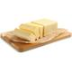
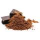

VOLTAR
Bolo de Cenoura
Ingredientes:
Massa:
 1/2 xícara (chá) de óleo
1/2 xícara (chá) de óleo
3 cenouras médias raladas
 4 ovos
4 ovos
 2 xícaras (chá) de açúcar
2 xícaras (chá) de açúcar
 2 e 1/2 xícaras (chá) de farinha de trigo -
2 e 1/2 xícaras (chá) de farinha de trigo -  1 colher (sopa) de fermento em pó
1 colher (sopa) de fermento em pó
Cobertura:
1 colher (sopa) de manteiga
3 colheres (sopa) de chocolate em pó
1 xícara (chá) de açúcar
 1 xícara (chá) de leite
1 xícara (chá) de leite
Modo de Preparo:
Massa:
1 - Em um liquidificador, adicione a cenoura, os ovos e o óleo, depois misture.
2 - Acrescente o açúcar e bata novamente por 5 minutos.
3 - Em uma tigela ou na batedeira, adicione a farinha de trigo e depois misture novamente.
4 - Acrescente o fermento e misture lentamente com uma colher.
5 - Asse em um forno preaquecido a 180° C por aproximadamente 40 minutos.
Cobertura:
1 - Despeje em uma tigela a manteiga, o chocolate em pó, o açúcar e o leite, depois misture.
2 - Leve a mistura ao fogo e continue misturando até obter uma consistência cremosa, depois despeje a calda por cima do bolo.

Olavo Santos
BOM APETITE!
VOLTAR